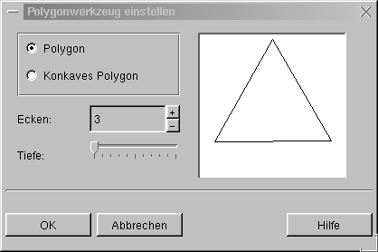
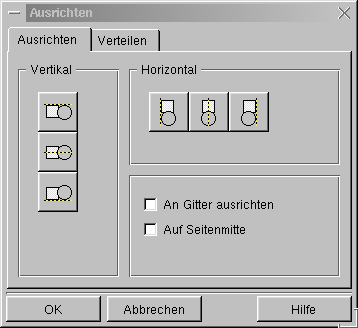
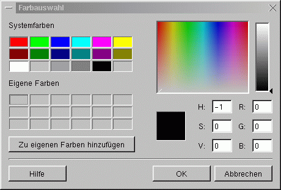

nächste vorherige Inhaltsverzeichnis
3. Anwendung
3.1 Allgemeines zur Anwendung
Die Bedienung des KIllustrators ist intuitiv erlernbar
und stark an Zeichenproramme angelehnt, die sich unter Windows bereits
einen Namen gemacht haben. Die verwendeten Tastenkürzel entsprechen
denen, die unter http://www.kde.org/standards.html als KDE-Standards
festgelegt sind.
Bei den verschiedenen Aktionen besteht, wenn es sinnvoll ist, die Möglichkeit der Verwendung der
STRG-Taste. Wird diese Taste gedrückt gehalten, so wird die entsprechende Aktion proportional ausgeführt. (d.H.
x und y Richtung werden gleich behandelt.) Wenn man beispielsweise beim Aufziehen eines Rechteckes die STRG-Taste
drückt, so zeichnet man ein Quadrat.
Einige Funktionen können auch gleichzeitig auf mehrere selektierte Objekte angewandt werden. Ich lasse diese
Betrachtung der Einfachkeit halber außen vor.
3.2 Zeichnen von 2D-Primitiven
Das prinzipielle Vorgehen, um ein 2D-Primitiv zu zeichnen, besteht aus folgenden Schritten:
- Wählen des zu zeichnenden Objekttypes
- Zeichnen des Objektes
Der zweite Schritt variiert bei den verschiedenen 2D-Primitiven. Daher gehe ich seperat auf jedes ein.
Das Icon des Knopfes, der zur Auswahl des entsprechenden Objekttypes gedrückt werden muß,
habe ich auch mit aufgeführt, obwohl die Icons eigentlich eindeutig
die Funktion des Knopfes beschreiben.
3.2.1 Freihand
Um eine Freihandzeichnung anzufertigen, gehen man folgt vor:
- Linksklick auf den Punkt der Zeichenfläche, an dem die Freihandzeichnung anfangen soll
- zeichnen bei gedrückter linker Maustaste
- wenn der Endpunkt der Freihandzeichnung erreicht ist, linke Maustaste loslassen
3.2.2 Linie / Polygonzug
 Mit diesem Tool können Polygonzüge gezeichnet werden. Im KIllustrator
ist eine Linie ein Polygon, welches nur aus einer Linie besteht. Daher
werden diese beiden Objekte im KIllustrator mit einem Tool gezeichnet.
Mit diesem Tool können Polygonzüge gezeichnet werden. Im KIllustrator
ist eine Linie ein Polygon, welches nur aus einer Linie besteht. Daher
werden diese beiden Objekte im KIllustrator mit einem Tool gezeichnet.
3.2.2.1 Linie
Um eine Linie zu zeichnen, geht man wie folgt von:
- Linksklick auf den Anfangspunkt der Linie
- Loslassen der linken Maustaste und aufziehen der Linie
- Rechtsklick auf den Endpunkt der Linie
3.2.2.2 Pfad
Um einen Pfad zu zeichnen, geht man wie folgt vor:
- Linksklick auf den Anfangspunkt des Pfades
- Loslassen der linken Maustaste und Aufziehen der ertsen Linie
- Linksklick auf den Punkt, an dem der nächste Punkt des Polygons liegen soll
- Loslassen der linken Maustaste und aufziehen der zweiten Linie
- ...
- Soll die letzte Linie gezeichnet werden, so beendet man diese nicht mit einem Linksklick, sondern mit
einem Rechtsklick
3.2.2.3 geschlossener Polygonzug
Um einen geschlossenen Polygonzug zu zeichnen, geht man wie beim Pfad vor. Der Unterschied liegt nur im Beenden
des Polygonzuges. Um das Polygon zu schließen, hält man die
Schift-Taste gedrückt, wenn man den abschließenden Rechsklick
macht. Dadurch wird eine Linie von dem zuletzt mit einem Linksklick gesetzten
Punkt zum Anfangspunkt des Polygonzuges gezeichnet.
3.2.3 Bezierkurve
 Bezierkurven zu zeichnen ist oftmals ein Problem, nicht so jedoch mit dem KIllustrator. Man gehe wie folgt vor:
Bezierkurven zu zeichnen ist oftmals ein Problem, nicht so jedoch mit dem KIllustrator. Man gehe wie folgt vor:
- Linksklick auf den Anfangspunkt der Bezierkurve
- Mit der Hilfslinie den Anstieg des Kurvensegmentes in diesem Punkt festlegen
- Linksklick auf den zweiten Punkt dieses Kurvensegmentes
- Kurve mit der Hilfslinie formen
- sollen weitere Kurvensegmente gezeichnet werden, Linksklick ansonsten Rechtsklick zum Übernehmen des
gezeichneten Segmentes
3.2.4 Rechteck
Um ein Rechteck zu zeichnen, geht man wie folgt
vor:
- Linksklick auf einen Eckpunkt des Rechteckes
- Aufziehen des Rechteckes bei gedrückter Linker Maustaste
- Linke Maustaste wieder loslassen
Möchte man ein Quadrat zeichnen, so kann man beim Aufziehen des Rechteckes die STRG-Taste gedrückt
halten.
3.2.5 gleichmäßiges Polygon
 Das Tool für gleichmäßige
Polygone ist eine einfache Möglichkeit, gleichseitige Dreiecke, Vierecke,
etc. zu zeichnen, wenn man dies nicht über einen Polygonzug selbst
machen will. Das Vorgehen hierbei ist folgendes:
Das Tool für gleichmäßige
Polygone ist eine einfache Möglichkeit, gleichseitige Dreiecke, Vierecke,
etc. zu zeichnen, wenn man dies nicht über einen Polygonzug selbst
machen will. Das Vorgehen hierbei ist folgendes:
- Linker-Doppelklick auf den Knopf für gleichmäßige Polygone
- nun öffnet sich ein Fenster, in dem man das zu zeichnende Polygon definieren kann

- entsprechende Einstellungen vornehmen
- bestätigen mittels Linksklick auf den OK-Knopf
- Linksklick auf den Anfangspunkt*
- Aufziehen des Polygons bei gedrückter linker Maustaste
- Loslassen der Maustaste
*In diesem Fall ist der Anfangspunkt nicht als solche zu sehen, da er nach dem Aufziehen des Polygons nicht mehr zu
diesem dazu gehört. Man sollte mit diesem Tool einfach ein bischen "herumspielen" und den
Funktionsumfang herausfinden.
3.2.6 Ellipse / Kreis
 Um eine Ellipse zu zeichnen, geht man wie folgt vor:
Um eine Ellipse zu zeichnen, geht man wie folgt vor:
- Linksklick auf einen Punkt des Umrechteckes* der Ellipse
- Aufziehen der Ellipse bei gedrückter linker Maustaste
- Loslassen der Linken Maustaste
Soll statt einer Ellipse ein Kreis gezeichnet werden, muß lediglich beim Aufziehen die STRG-Taste gedrückt
werden.
*Vereinfacht gesagt ist ein Umrechteck ein Rechteck, daß man um die Ellipse zeichnen kann, wobei die Kanten
des Rechteckes Tangenten der Ellipse sind.
3.2.7 Text
 Dieses Tool dient zum Einbinden von Texten in eine
KIllustratorzeichnung.
Man gehe dazu wie folgt vor:
Dieses Tool dient zum Einbinden von Texten in eine
KIllustratorzeichnung.
Man gehe dazu wie folgt vor:
- Linksklick auf die Stelle, an der der Text beginnen soll
- Eingeben des Textes
Die Eingabe wird solange fortgesetzt, bis ein neuer Objekttyp gewählt oder ein Linksklick zur Eingabe
des nächsten Textes an einer anderen Stelle gemacht wird.
3.3 Transformationen von 2D-Primitiven
Wie jedes Zeichentool bietet auch der KIllustrator mannigfaltige Möglichkeiten, gezeichnete Objekte zu rotieren,
zu skalieren, zu verschieben; kurz gesagt zu transformieren. Dieser Abschnitt beschreibt nun, wie man entsprechende
Transformationen durchführen kann. Das Icon, welches unter den Punkten zugeordnet ist, ist jeweils vorher in der
Iconleiste zu wählen.
3.3.1 Rotation
 Unter Rotation versteht man das Drehen eines Objektes um seinen
Mittelpukt. Alle gezeichneten Objekte können gedreht werden. Man gehe wie
folgt vor, um ein Objekt zu drehen:
Unter Rotation versteht man das Drehen eines Objektes um seinen
Mittelpukt. Alle gezeichneten Objekte können gedreht werden. Man gehe wie
folgt vor, um ein Objekt zu drehen:
- 2x Linksklick auf das zu drehende Objekt (bis der Rahmen um das Objekt aus Pfeilen besteht)
- einen Eckpfeil anklicken und bei gedrückter Maustaste das Objekt drehen
- Maustaste loslassen
3.3.2 Skalieren
Unter skalieren versteht man das Vergrößern bzw.
Verkleinern von Objekten. Alle gezeichneten Objekte können skaliert werden. Zum Skalieren von Objekten geht man
wie folgt vor:
- Linksklick auf das zu skalierende Objekt (bis der Rahmen um das Objekt aus gefüllten Quadraten besteht)
- das gefüllte Quadrat anklicken, in dessen Richtung das Objekt skaliert werden soll
- bei gedrückter Maustaste Objekt skalieren
- Maustaste loslassen
Hält man beim Skalieren eines Objektes die STRG-Taste gedrückt, so wird das Objekt proportional skaliert.
3.3.3 Verschieben von Objekten
Zum Verschieben von Objekten geht man wie folgt vor:
- Linksklick in das zu verschiebende Objekt
- bei gedrückter linker Maustaste Objekt verschieben
- Maustaste loslassen
3.3.4 Ändern eines gezeichneten Objektes
 Neben den Transformationen von ganzen Objekten besteht auch
die Möglichkeit einzelne Teile von Objekten zu manipulieren. Wenn man auf das Icon geklickt
hat, öffnet sich ein Untermenü, über welches man die folgenden Änderungen auswählen kann.
Neben den Transformationen von ganzen Objekten besteht auch
die Möglichkeit einzelne Teile von Objekten zu manipulieren. Wenn man auf das Icon geklickt
hat, öffnet sich ein Untermenü, über welches man die folgenden Änderungen auswählen kann.
WICHTIG ! Das Objekt, das auf diese Art verändert werden soll, muß vorher selektiert sein! Wählt
man daraufhin das Punktmanipulationstool, so ändert sich der Rahmen des Objektes in leere Vierecke.
3.3.4.1 Verschieben von Punkten
 Zum Verschieben eines einzelnen Objektpunktes geht man wie folgt vor:
Zum Verschieben eines einzelnen Objektpunktes geht man wie folgt vor:
- Linkklick auf den zu verschiebenden Punkt
- bei gedrückter Maustaste Punkt verschieben
- Maustaste loslassen
3.3.4.2 Hinzufügen von Punkten
 Diese Funktion ermöglicht es komplexen Objekten einen
Manipulationspunkt hinzuzufügen: Man klickt dafür einfach auf die Stelle des Objektes, an der der Punkt
gesetzt werden soll.
Diese Funktion ermöglicht es komplexen Objekten einen
Manipulationspunkt hinzuzufügen: Man klickt dafür einfach auf die Stelle des Objektes, an der der Punkt
gesetzt werden soll.
3.3.4.3 Entfernen von Punkten
Mit dieser Funktion kann man durch einfaches Anklicken Punkte aus Objekten entfernen.
3.3.4.4 Füllen von Objekten
Will man ein Objekt einfach mit einer Farbe füllen, ist es ausreichend, dieses zu
selektieren und mit der linken Maustaste auf die gewünschte Farbe in der Farbauswahlleiste zu klicken. Ist die
gewünschte Farbe nicht dabei oder soll zum Füllen ein Muster oder ein Farbverlauf verwendet werden, geht man wie
folgt vor.
- selektieren des zu füllenden Objektes
- Rechtsklick in das Objekt (Maustaste wieder loslassen)
- Menüpunkt "Eigenschaften" anklicken
- das Register "Füllung" anklicken
Nun sind der Phantasie keine Grenzen gesetzt. Ist die gewünschte Füllung gefunden, bestätigt man mit OK und
voila.
WICHTIG ! Beim Füllen mit einem Muster muß eine Farbe festgelegt werden. Anderenfalls kann es sein, daß das
Objekt leer scheint, obwohl es gefüllt ist.
3.4 Positionieren von Objekten
Der KIllustrator bietet eine Vielzahl von Hilfsmitteln zum Positionieren von Objekten. Er ermöglicht ein punktgenaues
Zeichnen und ein späteres Ausrichten der Objekte.
3.4.1 Gitter
Das Gitter ist eine Möglichkeit, schon beim Zeichnen sehr genau zu arbeiten. Es kann aber auch nur als Anhalt
angesehen werden. Folgende drei Aktionen sind zum Einstellen von Gittern möglich. (In Klammern steht als erstes,
über welche Menüpunkte man die entsprechende Funktion auslösen kann und als zweites, was sie bewirkt.)
- Gitter anzeigen (Ansicht -> Gitter anzeigen, stellt das Gitter dar)
- An Gitter ausrichten (Layout -> An Gitter ausrichten, Objekte rasten nun auf dem Gitter ein)
- Gitter bearbeiten (Layout -> Gitter, bearbeiten des Gitters)
Die Funktionen eins und zwei erklären sich von selbst und können auch mit entsprechenden Knöpfen unter
Funktion drei ausgelöst werden. Das Bearbeiten des Gitters ermöglicht zudem noch das Einstellen des Abstandes
der Gitterpunkte.
3.4.2 Hilfslinien
Hilfslinien sind neben dem Gitter eine Möglichkeit bereits beim Zeichnen Perfektion walten zu lassen. Der
Funktionsumfang entspricht dem des Gitters und auch die Funktionsaufrufe sind äquivalet zu finden. Sie haben
gegenüber dem Gitter den Vorteil, daß man die Abstände zwischen den einzelnen Hilflinien frei variieren
kann. Der KIllustrator ermöglicht vertikale und horizontale Hilfslinien.
3.4.3 Ausrichten von Objekten
Diese Positionierungsart greift nach dem Zeichnen eines
Objektes. Man selektiere das auszurichtende Objekt und Klicke mit der rechten Maustaste in dieses. Nun wählt man den
Menüpunkt "Ausrichten" und erhält folgendes Dialogfenster:

In der mir vorliegenden Version funktioniert nur das Ausrichten auf der Seitenmitte. Ich werde
diesbezüglich noch einmal mit Kai-Uwe sprechen und hoffe, daß in der nächsten Version mehr Funktionalität zum
Ausrichten implementiert ist.
3.4.4 Ausrichten von Texten an Pfaden
Das Ausrichten eines Textes an einem Pfad ist ein sehr
nützliches Tool, wenn man z.B. Banner gestalten will. Ist der entsprechende Pfad gezeichnet, geht man wie folgt vor, um
an ihm einen Text auszurichten:
- selektieren des auszurichtenden Textes
- über den Menüpunkt "Anordnen" den Punkt "Text entlang eines Pfades" wählen
- das Objekt, das als Pfad dienen soll, mit der linken Maustaste anklicken (ein Rechtsklick bricht die Aktion ab!)
Folgende Objekte können als Pfad verwendet werden:
3.4.5 Gruppieren von Objekten
Einzelne Objekte können zu Gruppen zusammengefaßt werden. Dies ist vor allem dann interessant, wenn man komplexe Figuren
aus einzelnen Objekten zusammensetzen und diese Figuren dann als einzelnes Objekt betrachten will. Zum
Gruppieren von Objekten geht man wie folgt vor:
- Selektieren der zu gruppierenden Objekte
- ...
Will man eine Gruppe wieder trennen, selektiert man diese und verwendet die Funktion "..." des
Menüpunktes "...;".
3.5 Das Schichtenkonzept
3.5.1 Was sind Schichten?
Das Schichtenkonzept läßt sich am einfachsten an Papierzeichnungen erklären. Jede Schicht entspricht einem
Blatt. Standartmäßig sind alle Blätter transparent, können beschrieben und verschickt werden. Im
KIllustrator entsprechen diese drei Eigenschaften folgende Funktionen:
- Transparenz: Man kann durch die einzelnen Schichten auf die anderen blicken. Es entsteht somit der Eindruck, man
arbeite mit nur einer Schicht (einem Blatt).
- Beschreibbarkeit: Ich kann in der gewählten Schicht zeichnen.
- Verschickbarkeit: Diese Schicht wird mit ausgedruckt.
Damit ist aber das Repertoire noch nicht ausgeschöpft. Einzelne Schichten können ausgeblendet werden. Ihr Inhalt
wird dadurch nicht mehr angezeigt. Dies ist auch beim Drucken möglich.
3.5.2 Arbeiten mit Schichten?
3.6 Umgang mit Dateien
3.6.1 Zeichnung speichern
Zum Speichern von Zeichnungen gibt es im großen und ganzen zwei Wege. Zum einen, über den Menüpunkt
"Datei" und zum anderen über das Diskettenicon in der Iconleiste. Hat man die aktuelle Zeichnung neu erstellt und noch nie
gespeichert, so gelangt man auf jeden Fall in den Dialog, in dem man den Dateinamen der zu speichernden Zeichnung bestimmen
kann. Ist der Zeichnung bereits ein Dateiname zugewiesen, so kann wird dieser verwendet, es sei denn, man benutzt den
Menüpunkt "Speichern unter".
Man sollte als Dateierweiterung .kil verwenden. Nur so ist es gewährleistet, daß der KIllustrator diese
Datei auch problemlos wiederfindet.
3.6.2 Zeichnung laden
3.6.3 Importieren und Exportieren
3.6.4 Zeichnung Drucken
3.7 Undo / Redo
Die Funktionen Undo und Redo ermöglichen es, ein wenig mit den verschiedenen Tools "herumzuspielen".
Wenn man merkt, daß der Schritt, den man gerade gemacht hat, nicht gefällt, so verwendet
man einfach Undo um ihn rückgängig zu machen. Stellt man nach einem Undo fest, daß die
rückgänging gemachte Aktion doch nicht so schlecht gewesen ist, kann man sie mit Redo wiederholen.
Der KIllustrator bietet die Möglichkeit alle gemachten Aktionen zu wiederrufen. D.h. das Undo funktioniert
solange, bis die Zeichnung wieder leer ist.
Man sollte aber beachten, daß Undo und Redo immer in der Reihenfolge wirken, in der gezeichnet wurde. Es ist
also nicht möglich nur den vorletzten Schritt rückgängig zu machen und den letzten zu behalten.
3.8 Ansicht vergößern bzw. verkleinern
Das Zoomen, wie das Ändern der Ansichtsgröße
auch genannt wird, kann auf zwei Wegen erfolgen. Der einfachste ist das Auswählen eines Zoomfaktors aus dem
Ausklappmenü in dem standardmäßig 100% steht. Der zweite besteht in der Verwendung der Lupe. Klickt man mit
der linken Maustaste in die Zeichnung, so wird die Region um den Klickpunkt auf den nächste Zoomfaktor
vergrößert. Folgende Zoomfaktoren stehen zur Verfügung:
- 50%
- 100%
- 150%
- 200%
- 400%
- 600%
- 800%
- 1000%
3.9 Umgang mit Farben
Der Umgang mit Farben ist beim KIllustrator sehr einfach gestaltet. Im Grunde könnte man ihn mit einem Satz
beschreiben, wenn da nicht noch zusätzliche Funktionen wären. Allgemein sei gesagt, ein Linksklick in die
Farbauswahlleiste ändert die Füllfarbe, ein Rechtsklick hingegen die Zeichen- bzw. Rahmenfarbe eines selektierten
Objektes. Ist der gewünschte Farbton nicht in dieser Leiste enthalten, muß man zum Ändern der Zeichenfarbe wie folgt vorgehen.
- Selektieren des zu bearbeitenden Objektes
- Rechtsklick in das Objekt und Menüpunkt "Eigenschaften" auswählen
- Register "Umriß" wählen
- über den Knopf "Farbe" gelangt man in den Farbdialog

- Linksklick in das "bunte" Fenster und bei gedrückter Maustaste Farbton durch Bewegen der Maus
wählen
- Loslassen der linken Maustaste
- Linksklick auf das kleine Dreieck am rechten Fensterrand
- Einstellen der Helligkeit durch Auf- und Abbewegen des kleinen Dreickes bei gedrückter linker Maustaste
- Loslassen der linken Maustaste
- durch einen Linksklick einen freien Farbplatz auswählen
- mit dem Knopf "Zu eigenen Farben hinzufügen" diesem Farbplatz die eingestellte Farbe zuweisen
Man kann die HSV und RGB Werte der Farbe auch direkt als Zahlenwert eingeben. Dazu klickt man in das entsprechende Feld,
editiert den Wert und schließt den Vorgang mit der Eingabetaste ab.
3.10 Ändern der Standardparameter
3.10.1 globale Parameter
3.10.1.1 Seiteneinstellungen
3.10.1.2 Maßeinheiten
3.10.2 Parameter von Objekten
Funktionen, wie z.B. das Füllen von Objekten, können als Standard für neu zu zeichnenden Objekte definiert werden.
Dies geschieht, indem man die entsprechende Funktion aufruft, ohne ein Objekt selektiert zu haben. Aus
Sicherheitsgründen muß man dann noch eine Bestätigung der globalen Änderung vornehmen.
nächste vorherige Inhaltsverzeichnis